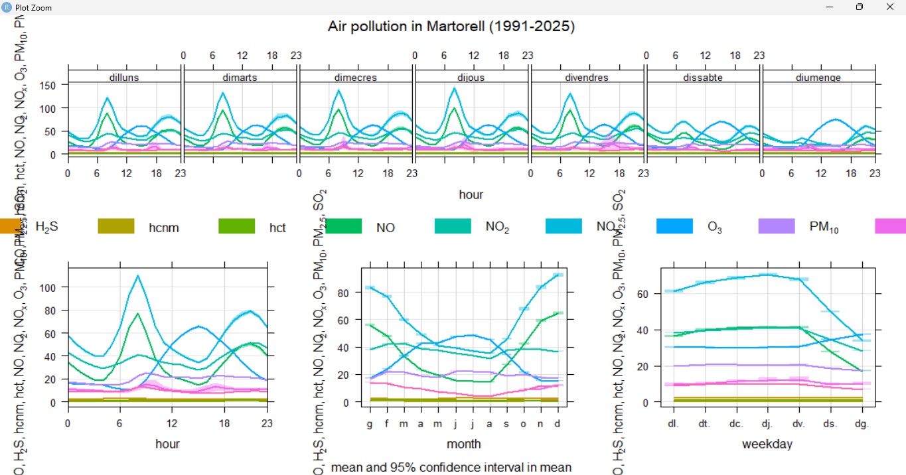

Web de Roger
Web de Roger
A continuacio veure una imatge del programa que hem utilitzat i totes les dades horàriaes desde el 1991 fins al 2025 que hem utilitzat per generar els grafcs amb Rstudio.
Rstudio es un programa profesional per analisi de dades kque utilitza biblioteques especialitzades en llengüatge R com "tidyverse" per ordenar dades i "openair" que esta especialitzada en analisi de l'aire
